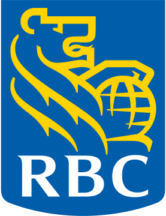

Owen Guo
Summary
Senior communications officer with 10+ years in strategic communications, editorial strategy and storytelling. Former reporter at the  New York Times and Financial Times with a proven ability to package and manage digital content for diverse organizations. Currently a 2025–26 Journalism Fellow at Massey College, University of Toronto.
New York Times and Financial Times with a proven ability to package and manage digital content for diverse organizations. Currently a 2025–26 Journalism Fellow at Massey College, University of Toronto.
Communications Experience
Senior Media Relations Advisor
Legal Aid Ontario — 2023–2025
- Managed media relations and developed key messaging for executives
- Provided communications counsel to senior leadership on high-profile matters
- Supported issues management across the organization

Lead Content StrategistRBC Direct Investing — 2022–2023
- Oversaw editorial strategy and content auditing for digital platforms
- Partnered cross-functionally with product and UX teams to refine content
- Optimized content for SEO and user engagement
Content & Media Relations Manager
TRIEC (Toronto Region Immigrant Employment Council) — 2021–2022
- Initiated media outreach campaigns to amplify brand recognition
- Partnered with research staff to draft media-ready stories on immigrant employment
- Delivered media training and writing workshops to internal teams
Reporting Experience
Freelance Reporter
Toronto — 2018–Present
- Contributing writer for The Globe and Mail and Toronto Star
- Contributing writer for Sinocism newsletter (400K+ subscribers)
- Contributing writer for Wealthsimple's TLDR and MaRS
The New York Times, Beijing — 2015–2018
- Researcher and reporter on the business desk
- Authored four front-page stories in print
Owen Guo — 1 / 2